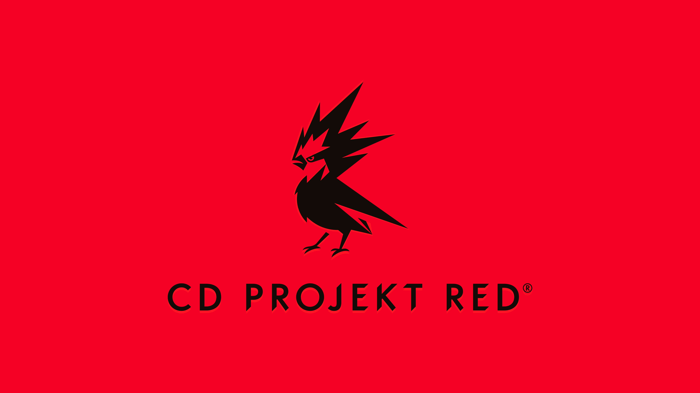
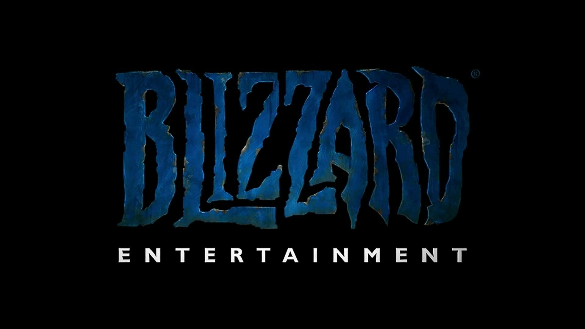
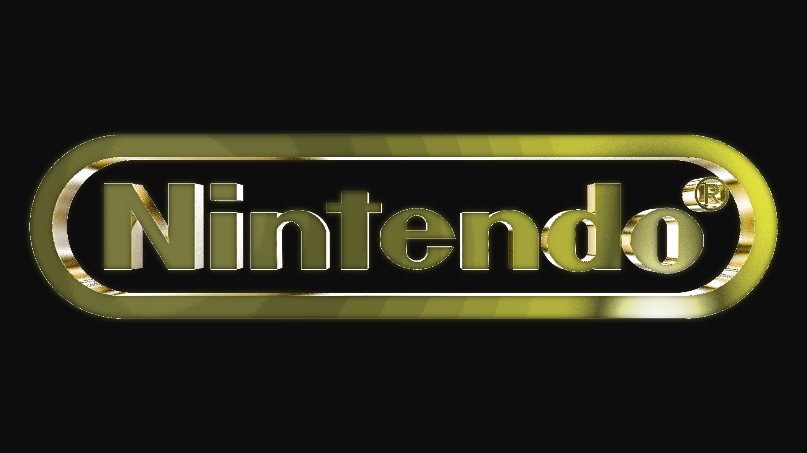
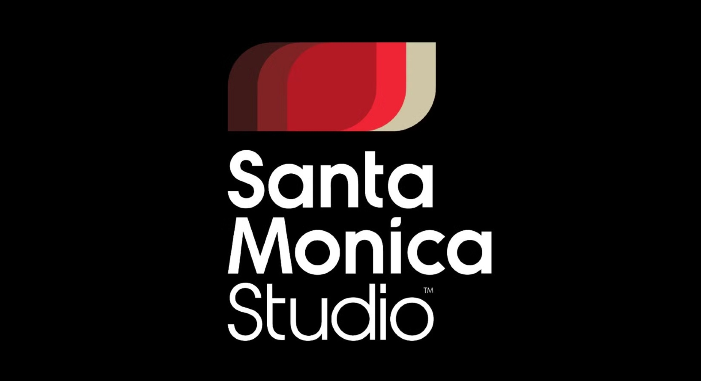
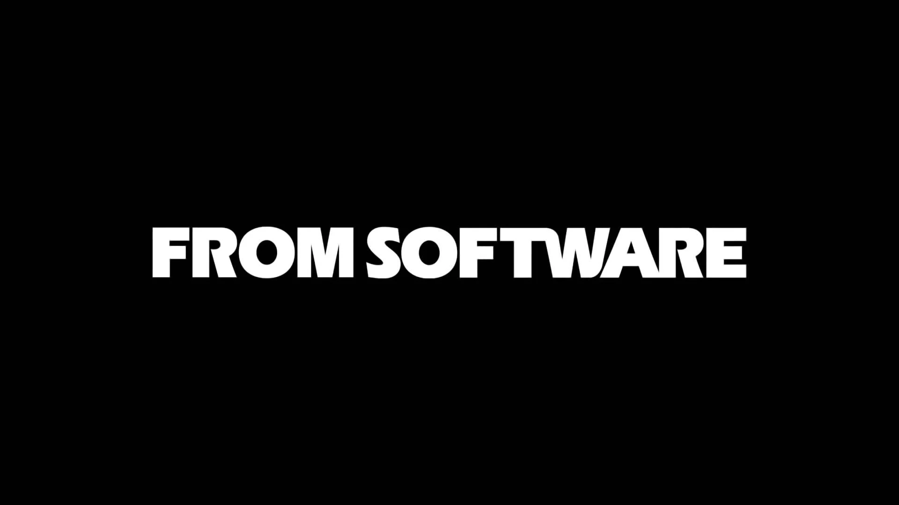
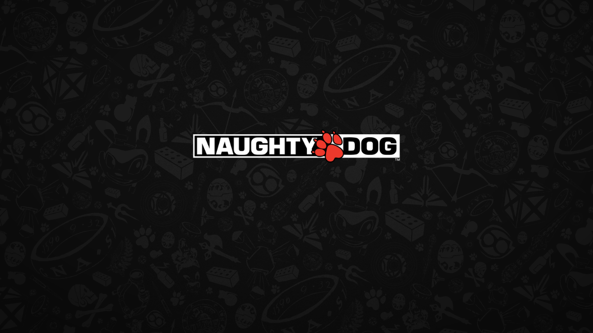
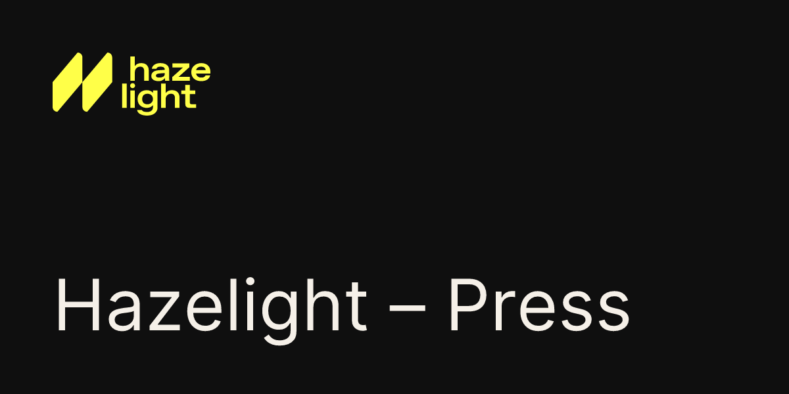
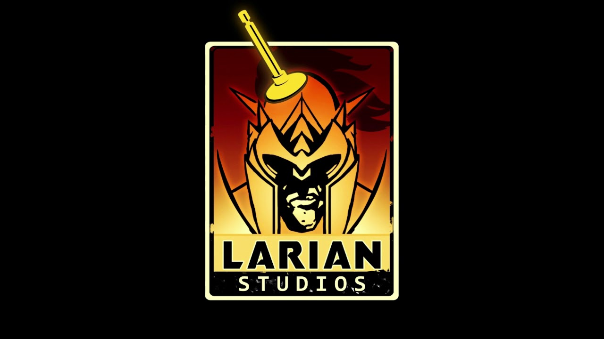
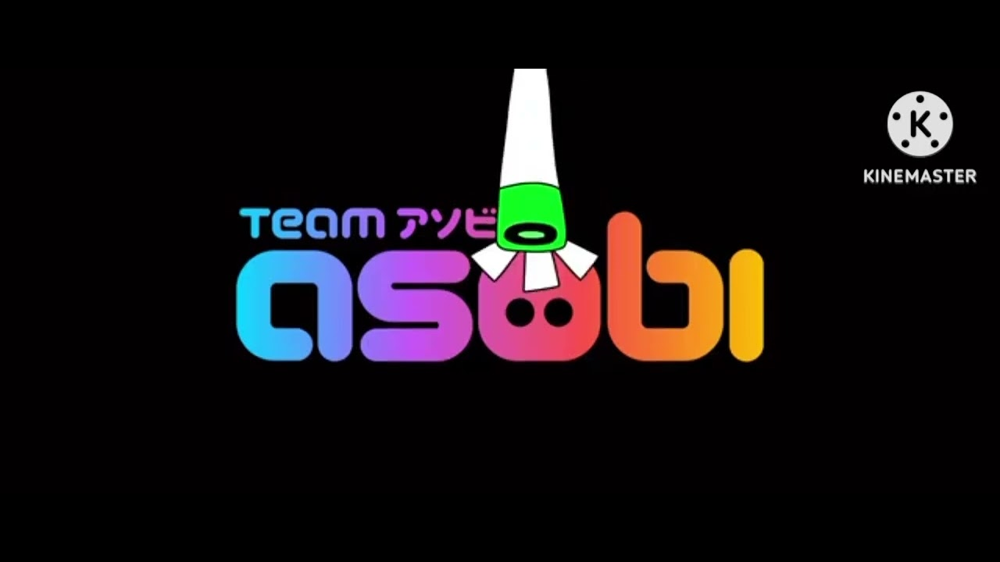
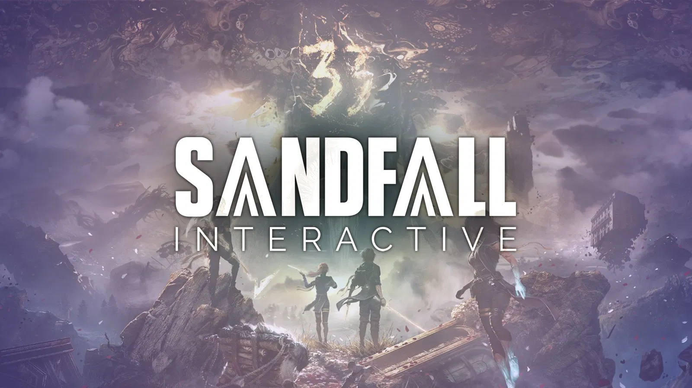

Quá trình ra đời
Dragon Age: Inquisition — 2014
Nhà phát triển: BioWare
Phát hành: 2014
BioWare muốn tạo ra một thế giới rộng lớn hơn rất nhiều so với những phần Dragon Age trước. Đội ngũ tập trung xây dựng môi trường rộng, nhiều nhân vật, nhiều phe phái và những lựa chọn có ảnh hưởng đến câu chuyện.
Trong quá trình phát triển, rất nhiều bản concept art được tạo ra để định hình nhân vật, quái vật và thế giới. Game sử dụng Frostbite 3 để tạo ra những môi trường lớn và có độ chi tiết cao hơn.
Điểm đặc biệt: Người chơi được tự mình khám phá một thế giới fantasy rộng lớn và quyết định số phận của nhiều nhân vật.

The Witcher 3: Wild Hunt — 2015
Nhà phát triển: CD Projekt Red
Phát hành: 2015
Sau thành công của hai phần trước, CD Projekt Red muốn đưa Geralt vào một thế giới mở lớn hơn rất nhiều.
Đội ngũ tập trung vào việc xây dựng một bản đồ rộng lớn, những thành phố, làng mạc và hàng loạt nhiệm vụ phụ. Điều quan trọng là các nhiệm vụ không chỉ tồn tại để “làm cho có”, mà thường có câu chuyện và lựa chọn riêng.
Điểm đặc biệt: Bạn có thể dành hàng chục giờ chỉ để khám phá thế giới và những câu chuyện bên ngoài cốt truyện chính.

Overwatch — 2016
Nhà phát triển: Blizzard Entertainment
Phát hành: 2016
Ý tưởng của Overwatch bắt nguồn từ một dự án lớn hơn của Blizzard. Sau khi dự án đó không tiếp tục, đội ngũ đã tận dụng một số ý tưởng và xây dựng một game hoàn toàn mới.
Blizzard tập trung vào việc tạo ra những nhân vật có khả năng, tính cách và phong cách chơi khác nhau. Đây trở thành nền tảng quan trọng của game.
Điểm đặc biệt: Mỗi nhân vật mang lại một cách chơi khác nhau, khiến các trận đấu luôn có nhiều tình huống bất ngờ.

The Legend of Zelda: Breath of the Wild — 2017
Nhà phát triển: Nintendo
Phát hành: 2017
Nintendo muốn thay đổi công thức quen thuộc của Zelda và tạo ra một thế giới mở thực sự tự do.
Trong quá trình phát triển, đội ngũ thử nghiệm nhiều ý tưởng về vật lý, leo trèo, thời tiết và cách các vật thể tương tác với nhau. Những thử nghiệm đó dần hình thành nên thế giới Hyrule.
Điểm đặc biệt: Game gần như không ép bạn phải đi theo một con đường duy nhất. Bạn có thể tự khám phá và tự tìm ra cách giải quyết vấn đề.

God of War — 2018
Nhà phát triển: Santa Monica Studio
Phát hành: 2018
Sau nhiều năm gắn liền với thần thoại Hy Lạp, Santa Monica Studio quyết định đưa Kratos đến một thế giới hoàn toàn mới: thần thoại Bắc Âu.
Nhưng thay đổi lớn nhất nằm ở câu chuyện. Game tập trung nhiều hơn vào mối quan hệ giữa Kratos và Atreus, thay vì chỉ tập trung vào những trận chiến.
Điểm đặc biệt: Một Kratos mạnh mẽ nhưng đang cố gắng học cách trở thành một người cha tốt.

Sekiro: Shadows Die Twice — 2019
Nhà phát triển: FromSoftware
Phát hành: 2019
Sau Dark Souls và Bloodborne, FromSoftware muốn tạo ra một hệ thống chiến đấu mới.
Thay vì chỉ dựa vào né tránh và tấn công, Sekiro tập trung vào phản đòn, phá thế phòng thủ và khả năng di chuyển linh hoạt.
Điểm đặc biệt: Cảm giác chiến thắng đến từ việc bạn thực sự hiểu cách chiến đấu của đối thủ.

The Last of Us Part II — 2020
Nhà phát triển: Naughty Dog
Phát hành: 2020
Sau thành công của phần đầu, Naughty Dog muốn tạo ra một phần tiếp theo lớn hơn cả về thế giới lẫn câu chuyện.
Đội ngũ dành rất nhiều công sức cho môi trường, hoạt ảnh và cách nhân vật tương tác với thế giới xung quanh.
Điểm đặc biệt: Game không chỉ tập trung vào hành động mà còn khiến người chơi quan tâm đến những lựa chọn và cảm xúc của nhân vật.

It Takes Two — 2021
Nhà phát triển: Hazelight Studios
Phát hành: 2021
Hazelight muốn tạo ra một game mà hai người phải phối hợp với nhau để hoàn thành hành trình.
Mỗi màn chơi được thiết kế với những cơ chế khác nhau. Người chơi liên tục phải hỗ trợ nhau để giải quyết các thử thách.
Điểm đặc biệt: Gameplay thay đổi liên tục, khiến bạn gần như không biết màn tiếp theo sẽ có điều gì mới.

Elden Ring — 2022
Nhà phát triển: FromSoftware
Phát hành: 2022
HFromSoftware muốn đưa phong cách của những game trước vào một thế giới mở lớn hơn rất nhiều.
Họ xây dựng The Lands Between với những vùng đất rộng lớn, lâu đài, hầm ngục và vô số bí mật. Phần nền của thế giới cũng được xây dựng với sự tham gia của George R. R. Martin.
Điểm đặc biệt: Bạn có thể đi bất cứ đâu và gần như luôn có khả năng tìm thấy một điều gì đó mà mình không ngờ tới.
Baldur's Gate 3 — 2023
Nhà phát triển: Larian Studios
Phát hành: 2023
Larian Studios muốn tạo ra một RPG nơi người chơi có quyền quyết định rất lớn.
Game dựa trên hệ thống Dungeons & Dragons, vì vậy lựa chọn của người chơi có thể ảnh hưởng đến chiến đấu, nhân vật, nhiệm vụ và cả diễn biến câu chuyện.
Điểm đặc biệt: Hai người chơi khác nhau hoàn toàn có thể trải nghiệm một câu chuyện rất khác nhau.

Astro Bot — 2024
Nhà phát triển: Team Asobi
Phát hành: 2024
Team Asobi đã phát triển nhân vật Astro qua nhiều dự án trước khi đưa nhân vật này vào một cuộc phiêu lưu lớn.
Đội ngũ tập trung vào việc tạo ra những màn chơi đầy màu sắc, nhiều bí mật và tận dụng tốt khả năng của tay cầm PlayStation.
Điểm đặc biệt: Một game platformer dễ tiếp cận nhưng có rất nhiều thứ nhỏ để người chơi khám phá.

Clair Obscur: Expedition 33 — 2025
Nhà phát triển: Sandfall Interactive
Phát hành: 2025
Đây là dự án nổi bật của Sandfall Interactive, một studio đến từ Pháp. Đội ngũ muốn kết hợp RPG theo lượt truyền thống với những yếu tố hành động thời gian thực.
Game gây ấn tượng bởi phong cách nghệ thuật đậm chất châu Âu, thế giới u tối và câu chuyện xoay quanh những Expedition tuyệt vọng.
Điểm đặc biệt: Sự kết hợp giữa chiến đấu theo lượt và phản ứng thời gian thực khiến hệ thống chiến đấu có cảm giác khác biệt so với RPG theo lượt thông thường.

Quay lại Trang chủ Tiếp theo